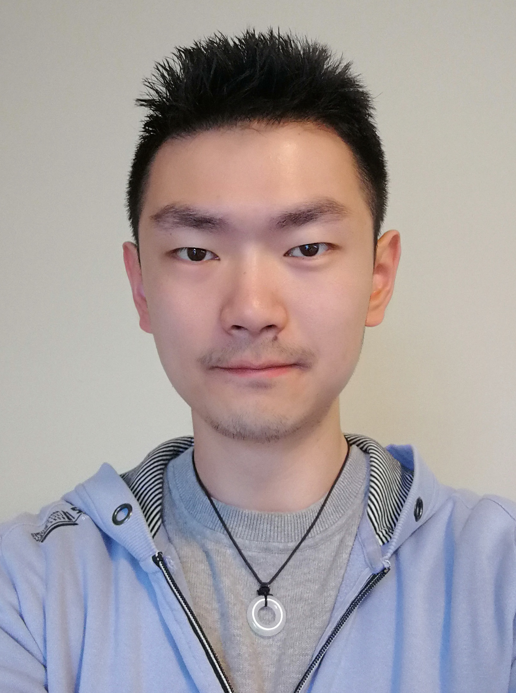

SCA Awards (New this year!)
The awards below will be presented at the SCA conference for the first time. Congratulations to the inaugural winners!
2021 SCA Doctoral Dissertation Award
Minchen Li (PhD, University of Pennsylvania, USA)
https://www.math.ucla.edu/~minchen/
Minchen Li is the inaugural winner of the Symposium on Computer Animation Doctoral Dissertation Award, for doctoral research that makes a significant contribution to the field of computer animation. Minchen's dissertation focuses on simulation of elastic objects undergoing complex deformations and contact, addressing the twin challenges of robustness and accuracy. His thesis first proposes a new Decomposed Optimization Time integrator (DOT) which enables efficient and stable solution of implicit integration for time-dependent elasticity problems involving nonlinear materials, large time steps, high speeds, and severe deformations across a broad range of material parameters. The second major component of the thesis is the development of an elegant variational approach to contact handling, called Incremental Potential Contact (IPC). IPC generates strictly intersection- and inversion-free trajectories for diverse elastic objects (volumes, shells, rods, particles) by carefully combining a smooth barrier formulation, unsigned distance functions, and contact-aware line search, and further incorporates a novel smooth approximation of static friction. Remarkably, the resulting method can successfully resolve a range of extremely difficult and large-scale benchmark frictional contact scenarios for which existing commercial and research codes simply fail. Since its publication, the work has already led to fruitful extensions for rigid body dynamics, geometric modeling tasks, and more. Concurrent with his primary thesis work, Minchen has also contributed to major advances to the efficiency and expressivity of material point methods. These impressive achievements in computer animation research make Minchen a worthy recipient of this award.
2021 SCA Early Career Researcher Award
Vinicius C. Azevedo (PhD, UFRGS,
Brazil; Research Scientist, Disney Research Studios)
https://people.inf.ethz.ch/~vviniciu/
Vinicius C. Azevedo is the inaugural winner of the Symposium on Computer Animation Early Career Researcher Award, for significant early-career contributions to the field of computer animation. His research has focused on fluid simulation, where it has made a number of strong contributions to the field. He introduced new approaches to improved modeling of fluid boundary conditions, using curvilinear grids, and further methods that preserve the geometry and topology for fluid flows with thin obstacles and narrow gaps. His work over the past three years has driven important advances at the intersection of machine learning and fluid simulation, beginning with an understanding of how convolutional neural networks could be used to model parameterized and non-parameterized simulation configurations for smoke and liquids, and further showing how to make these approaches stable and efficient. This was followed by high-impact work that aims to provide artistic control over the simulations, via neural style transfer methods. This enables the transfer of the style of arbitrary images to volumetric simulations, including complex smoke and liquid motions, and has already been used in feature film production. Vinicius intends to continue exploring efficient ways to combine machine learning with traditional fluids and other physically-based solvers. The animation community looks forward to seeing what this will bring!
SCA Doctoral Dissertation Award - Nominations Closed
The SCA Doctoral Dissertation Award is awarded to recognize a recent doctoral candidate who has successfully defended their Ph.D. dissertation in computer animation. This award recognizes young researchers who have already made a notable contribution very early during their doctoral study.
The dissertation must have been defended in the year prior to the given SCA year (e.g., Jan 1 - Dec 31, 2020 for the 2021 SCA). The key criteria used to evaluate the nominations include technical depth, significance of the research contribution, and potential impact on theory and practice.
Submission Materials (send to sca2021awards@gmail.com by Feb 28, 2021)
- Letter of nomination by a faculty member
- CV for the nominee, including a complete list of publications
- Electronic version (PDF) of the Ph.D. dissertation
SCA Early Career Researcher Award - Nominations Closed
The SCA Early Career Researcher Award is given to a researcher who has made a recent, significant contribution to the field of computer animation and is new to the field (i.e., received their Ph.D. or the equivalent up to five years ago, excluding eligible leaves for maternity, illness, parental). The intent is to recognize people who have already made a notable contribution very early in their careers and are likely to make more. Self-nominations accepted.
Submission Materials (send to sca2021awards@gmail.com by Feb 28, 2021)
- Research statement (max 1 page)
- CV
- Brief nomination letter or email (optional)